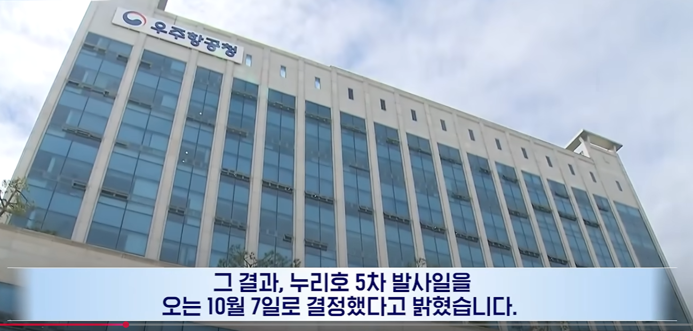
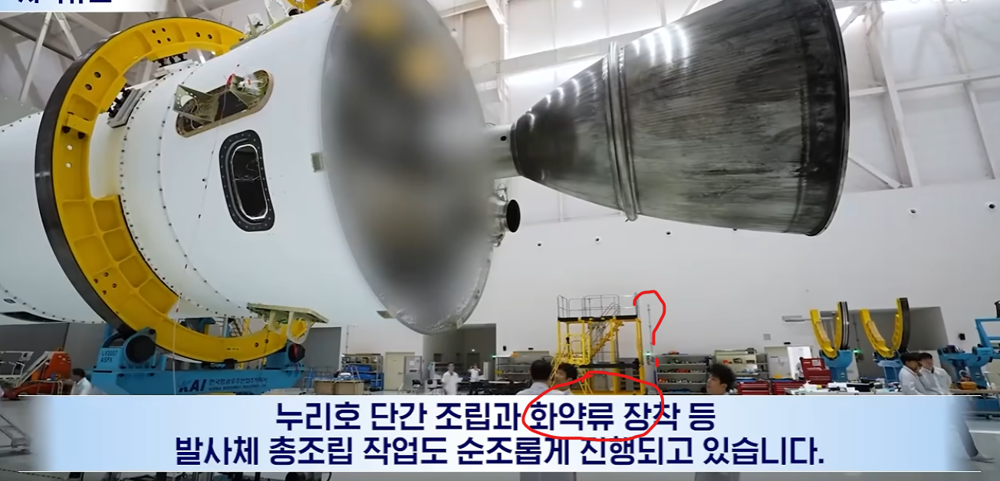
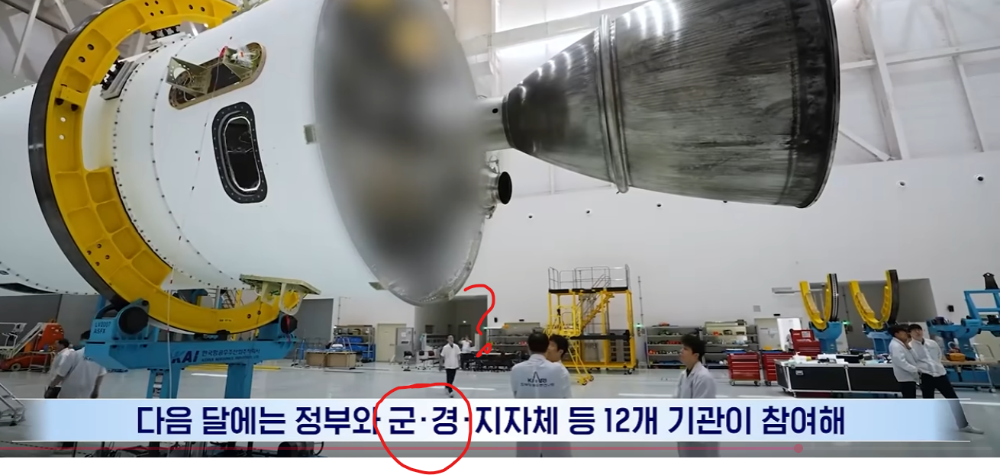
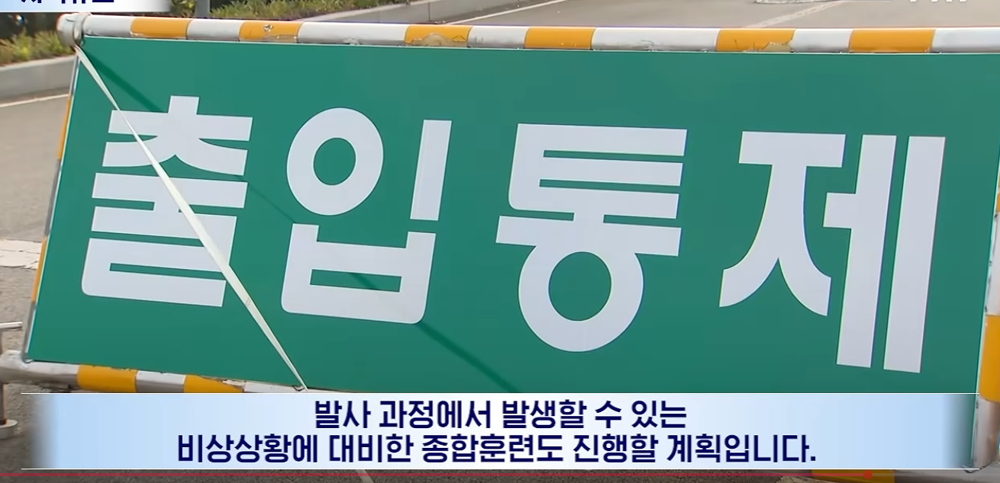

누리호 5차 발사 하는구나?

? 연구 발사체에 화약류를 왜 장착해?

군경이 참여???

???
출입통제 걸고 "비상상황에 대비한 종합훈련"을 한다고 함;
이제 숨기지도 않는듯

누리호 5차 발사 하는구나?

? 연구 발사체에 화약류를 왜 장착해?

군경이 참여???

???
출입통제 걸고 "비상상황에 대비한 종합훈련"을 한다고 함;
이제 숨기지도 않는듯
icbm 드립도 하도 뇌절하니까 꼴보기 싫음
ㄹㅇ
핵전문가가 우리나라 맘만 먹으면 6주면 쏜다던데 ㅋㅋㅋ
6......5...4.3.2.1
발사
6(초)주면.
씹소리임
이란처럼 협상용으로 99%까지 완료해놓고
우리 핵무기 아직 안만들었음 ㅎㅎ 하는거 아닌 이상 그거 보다 훨씬 오래걸림
그리고 저 화약은 걍 분리할때 추진체 연료임
진지하게 믿으면 니만 바보되는거
6개월 걸린다고 했
6개월
그 서 모 교수 나이먹고 노망나서 하는 소리니까 듣지마라. 도대체 테뉴어도 있는 양반이 관심이 고픈건지 뭔지 모르겠어.
절대 불가능
불가능함ㅋㅋ 6개월도 안돼
혹시라도 뺏길까봐 "자폭"하려는거잖아 ㅋㅋ
핵 연료 농축 가능
궤도 재진입 기술 보유중
정밀 타격 기술 보유중
우주 로켓 보유중
월성원전에 플루토늄 한가득
이게 무슨 진짜 미사일 개발하는거처럼 알고 있는 애들도 있고 ㅈㄴ 뇌절이긴 한데
그냥 냅두는것도 나쁘지 않음
효율에 미친 전쟁광인 한국인들한테 우주과학의 쓸모를 설득할 수 있는게 이거만한게 없음
미래 자원이 어쩌고 하는 이상적인 소리로 설득할 수 있을거같으면 해보든가ㅋㅋㅋ
???: 미래 자원요? 저희가요? 왜요?
미래자원이 어쩌구....원천기술 확보가 저쩌구... - 지루하고 현학적임
icbm 기술 습득입니다 - 이해가 쏙쏙
"그렇게 말씀하시면 안되고"
거 우리도 먹고 삽시다
추진체가 일단 화약의 일종임.
발사지역 및 예상 이동지역은 폭발 및 추락에 대비하기 위해 현장 제어는 경찰이, 발사체 추적은 군이 맡아서 함.
"제발 조용히좀 하세요 눈치없는 새기들아 "
이런 애들이 좋아하는게 무슨 미대를 못간 드립 그냥 류가 비슷함 호들갑찐따
군경은 항상 참여안했나?
눈치 없는 찐따새끼들 꼭 뇌절을 해야만 속이 후련해짐 ㅇㅇ
'어디 한번 죽어보자'
관련업계인인데 저기서 말하는 화약류는 밸브 구동용, 위성 덮게 뚜껑 전개용 화약, 1,2,3단 간의 분리를 위한 화약 이런것들임
어허 연구 목적
저런거에 합쳐저서 핵무기 뇌절까지 겹쳐서
전쟁나면 6주안에 ICBM 핵무기 만든다 ㅇㅈㄹ 뇌절꾼들 개 많음
대충 수동마티즈 도착하는소리
화약류는 아마 단분리용일 거고, 군대가 참여하는 건 하늘에 뭐 띄우려면 공군 허가 받아야 해서 그런 거일걸.
1. 화약 없이 로켓 어케 분리하누...?
2. 우주발사체 쏘는데 공군이 협조 안해...?
여기 보니 화약류와 군경에 대해서 애들이 설명 잘 했네.
그럴싸하네.. 그러니 그런걸로 해두자구.
로켓분리할때 화약쓰는거고 로켓발사할때 군경 다 동원된다. 나로호 첨 쏠때 사천에 특공여단 동원되서 주변 경계했었음. 무엇보다 고체연료도 아니고 누리호 자체가 액체연료로켓인데 재돌입 실험같은거 아니면 오바하지마라.
애초에 고체연료로켓 쏠땐 말하지도 않는다. 과거 고체로켓 쏠땐 흔적운 남은걸로 화재가 되니까 고체로켓 쐈다고 공개했었고.
군은 원래도 동원되서 경계근무했었음
평시에도 국가 보안시설이라 근처 산속에 매일 매복나가고
발사시즌에는 온 산을 헤집고 수색염병하고 낮밤으로 매복나감
발사시즌이랑 군생활겹치면 개빡셈
전생에 죄가 많은사람은 군생활 시작과 끝에 걸쳐서 두번 쏜다는 말도 있었음ㅋㅋㅋㅋ
아무튼 발사에 필요한 화약이라니까요
누리호 발사 다 하고 VIP 헬기타고 빠이빠이 할때까지 섬 밖으로 못나갔음 추리닝 저격수가 제일 기억에남음
저거 부품 단계끼리 분리할 때 들어가는 화약이겠지 뭐
"발사체 총조립" 총도 조립한대!
더 강한 화력
고체연료 개발해서 채우는데 몇일 걸리고 번거롭던 거에서 해방됐던거 아니었음?
?? : 위성발사 맞지? 그래 잘하자
위성 발사 맞잖아? 잘하자
??? : 그렇게 말하면 안되고
한 일 급은 갑자끼 참123꿰가 난동 부릴경우 3개월내로 조립가능하지않을까
아니야 이상한점 전혀 없어!